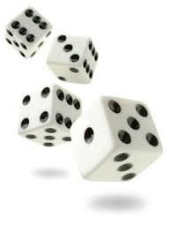
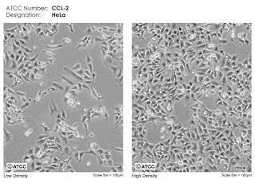

Bayes and Binomial Theorems
Our intuitions about test accuracy are often very inaccurate
Our intuitions about test accuracy are often very inaccurate
Bayes Theorem
In statistics there are many situations where you want to determine the probability that a sample for which you have certain measurement belongs to a certain set. Say you want to know the chance that you have HIV if you test positive. No test is perfect, so this probability will depend on the test sensitivity, but also on the specificity and on the incidence in the population, or set, that you belong to. Bayes Theorem is a simply the logic you have to apply to estimate such probabilities.
As a cancer researcher my attention was naturally drawn to this paper currently trending on Pubmed: Detection and localization of surgically resectable cancers with a multi-analyte blood test. This is a perfect practical example for applying Bayes rule! And most of the information we need is right there in the abstract: "The sensitivities ranged from 69% to 98% for the detection of five cancer types (ovary, liver, stomach, pancreas, and esophagus)..." and "The specificity of CancerSEEK was > 99%: only 7 of 812 healthy controls scored positive." Wow, a sensitivity of up to 98% and a specificity of more than 99%? This sounds like a fool proof test! Right? Now we just need to know the incidences for these cancers and we can see how likely it is that you have that type of cancer given a positive test score.
The Doctor is in.
Now replace 'A' with 'having cancer' and 'B' with 'testing positive' so we can read this as: "The probability of having cancer given a positive test result (the 'posterior', what we want to calculate) is equal to the probability of testing positive given that you have cancer (this is the 'sensitivity') times the probability of having cancer (the 'prior', which is the incidence of cancer in your population) divided by the probability of testing positive." The specificity is encompassed in the denominator as follows:
where
\(P(B|\neg{A})\)
is the probability of a positive test given that you do not have cancer, which is the inverse of the specificity, or the chance of getting a false positive result. The other parts of the denominator are the sensitivity times the prior, as seen in the numerator and the probability of not having cancer in your population.
For the incidence of cancer (I picked esophagus cancer for this calculation), Google tells us this is about 4 people per 100,000. So let's put in the numbers:
So if you go in without any symptoms (which is what you want if you want to avoid these cancers, symptoms often mean it is already too late), and take this test, a positive result will increase your risk from 0.004% to 0.4%. Still not very scary, right? Is that surprising?
What we can learn from this is that intuition from numbers about test accuracy is often very inaccurate. If you are a doctor using these kind of tests you better know what probabilities you are dealing with (don't worry, doctors know this) and do an independent second screen for the same cancer. Because this brings us to the real power of Bayes Theorem: After the first test, our posterior becomes the new prior: we can update our probabilities in light of new information! In other words: after taking the test you don't belong to the general population anymore, now you're a part of the population that tested positive. And in this population the cancer incidence is 0.4%. Just change the numbers for the sensitivity, specificity and replace the old prior with the posterior and you get a new posterior. If this second test (perhaps a scan of some sorts) is equally effective as the blood test above, then a positive outcome will increase the likelihood of you really having cancer from 0.4% to almost 30%. Still not super likely, but a bit more cause for worry.
Where a test like this really works well though is when you know you are in a high-risk population, e.g. when you have a genetic disposition for a certain kind of cancer (a BRCA1 or BRCA2 mutation for example). In such cases the sample space is drastically reduced and the test can be almost perfect. In the case of BRCA1 mutations where your chance of getting ovarian cancer sometime during your lifetime increases from 1.4% to almost 40% a positive test result will be correct more than 98% of the time.
Combining the Bayes and the Binomial Theorem
This is the binomial theorem:
The first part is the binomial equation and is pronounced n choose k, I (plan to) talk about this in another post, and p stands for probability. The binomial theorem is used to calculate probabilities when there is a binary outcome of an event k out of n total events and the probability of outcome k equals p. Example: What is the probability that you throw exactly 23 sixes (k = 23) in 30 throws (n=30) of a die (p = 1/6)? With the binomial theorem this is a piece of cake. (
\(7.2^{-13}\))
|  |
|  |
It's not directly straight forward unless you have a lot of experience what the difference is, but image analysis software can measure a bunch of features for each cell line and give you numbers to work with. Let's say that a feature describing the shape (s) of a nucleus falls within a certain range r (the values don't matter) 20% of the time for U2OS cells and 23% of the time for HeLa cells. Now you take one image of 180 cells of one of the dishes and measure this shape value. In 51 cells the value for s falls in range r. Now we can use Bayes and the Binomial Theorem together to determine if we're looking at U2OS or HeLa!
This gives
Δ9